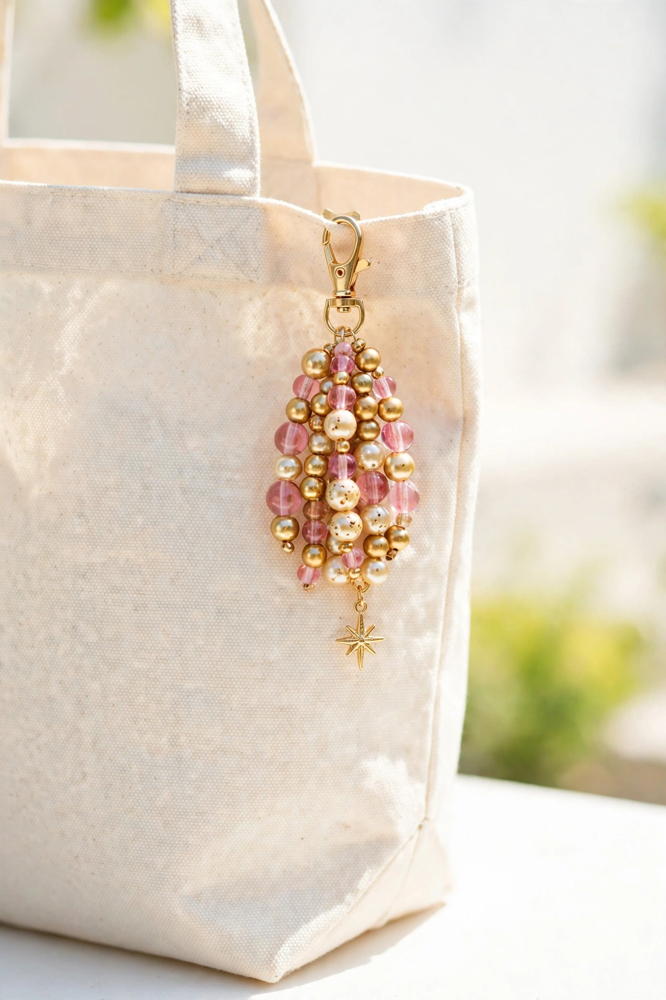

DIY Gifts Accessories
Beaded Bag Charm DIY in 15 Minutes

Bag charms are everywhere right now. This version uses beads, a little wire, and a lobster clasp, and it takes about 15 minutes from start to finish. Make one to match your bag, or make 3 as gifts. It is a good first jewelry project because there is no sewing, no glue to wait for, and no special skill needed. If you can thread beads on a wire, you can make this.
A bag charm is also a smart way to use leftover beads. Most crafters have a small box of beads that do not match any one project. This charm turns that mix into something useful. Clip it to a purse, a tote bag, or a backpack, and it adds color without adding weight.
What you need
- Beads, mixed sizes, 12 to 15 beads — about $3 for a mixed pack, or use beads you already have
- Beading wire, 49 strand, or strong jewelry cord — about $2 for a small spool
- Lobster clasp, 1 large — about $1, or reuse one from an old necklace
- Jump rings, 2 — about $1 for a small pack
- Crimp beads, 2 — about $1 for a small pack
- Flat nose pliers and scissors — about $5 if you need to buy pliers
- Optional: small pendant, letter bead, or tassel — about $1 to $2
Total cost is under $8 if you buy the beads and findings new, and much less if you already have pliers and a bead box at home. One mixed pack is enough for 3 or 4 charms. That brings the cost per charm down to about $2 to $3 each.
Choosing beads that look good together
Pick one color family, not a random mix. Cream and gold looks calm and expensive on a neutral bag. Red and pink looks fun on a dark bag. Blue and white looks fresh on a canvas tote. Pick one large bead to be the center, then smaller beads to go on each side. Mix shapes a little: round beads, faceted beads, and one flat bead give the charm texture without looking messy.
Check the bead holes before you buy. The holes need to be large enough for your wire to pass through twice, because the wire doubles back at the ends. Glass beads feel heavier and look more polished. Acrylic beads are lighter and cheaper.
Steps
- Plan the pattern. Lay your beads in a row on a table. Alternate large and small beads, and put one special bead in the middle. Try two or three layouts before you thread anything. It is much easier to change the order now than after the wire is crimped.
- Cut the wire. Cut 10 inches of beading wire. That gives you enough length to thread the beads and work the ends. Do not cut it shorter to save wire, because short wire is hard to handle and hard to crimp.
- Thread the beads. Thread the beads onto the wire in the order you planned, leaving about 1 inch of wire at each end. Push the beads to the center and check the pattern once more. The charm should be about 3 to 4 inches long.
- Add the clasp. Thread one end of the wire through a jump ring attached to the lobster clasp, then back through the last 2 beads and a crimp bead. Pull the wire snug, but not so tight that the beads cannot move a little. Squeeze the crimp bead flat with flat nose pliers.
- Finish the other end. Thread the other end through a second jump ring, then back through 2 beads and the second crimp bead. Add a small pendant, a letter bead, or a tassel to this jump ring if you like. Squeeze the second crimp flat and trim the extra wire close to the beads.
- Test it. Tug the charm gently at both ends. Nothing should slide or feel loose. Open and close the lobster clasp a few times to check it works. Clip the charm to your bag and give it a shake. If a bead rattles, the wire is too loose.
- Clip it on. Attach the charm to a purse handle, a tote strap, a backpack zipper, or a keychain ring. The clasp should close fully. If it slips off, the clasp is too small for the ring, so use a larger lobster clasp or a bigger jump ring.
Color ideas that sell the look
Try cream and gold for a neutral bag, red and pink for a fun bag, or blue and white for a tote. One color family looks more expensive than a random mix. Add a single gold bead in the middle for a focal point.
Make it last
Use beading wire, not thread. Thread stretches, frays, and breaks, especially on a bag that moves all day. Beading wire is coated, strong, and made for this job. Crimp beads properly with flat nose pliers. A proper crimp looks flat and holds the wire firmly.
Tips to save time and money
One mixed pack can make several charms, and the cost per charm drops to $2 or $3. Make charms in batches: lay out 3 patterns at once, thread all 3, then crimp all 3. It is faster than starting from scratch each time. Keep a small kit with wire, crimps, jump rings, and clasps in one box.
Common mistakes to avoid
Do not use thread instead of wire. It will stretch and break. Do not skip the crimp beads, because a knot alone will not hold beading wire. Do not make the charm too long. More than 15 beads makes it heavy and it swings too much. Do not use a clasp that is too small for your bag. Test the clasp on the bag before you finish, so you know it clips on and stays on.
Variations to try
Try a charm with a tassel at the bottom instead of a pendant. Try a charm with only one color of beads in different sizes for a clean look. Try a charm with a small star, heart, or flower charm. The same steps work for a keychain or a zipper pull.
Frequently asked questions
How long does a bag charm take to make? About 15 minutes once you have the supplies. Planning the bead pattern takes 5 minutes, threading takes 5 minutes, and crimping the ends takes 5 minutes.
What is the best wire for a bag charm? Beading wire with 49 strands is best. It is flexible, strong, and easy to thread. Avoid thin fishing line, which can snap, and avoid sewing thread, which stretches.
Can I make a bag charm without pliers? You need flat nose pliers to close the crimp beads properly. Regular pliers can work in a pinch, but flat nose pliers give a cleaner, stronger crimp. A basic pair costs about $5 and is useful for many jewelry projects.
Will the charm fit any bag? Yes, if the lobster clasp is large enough. Use a large clasp for thick tote straps and a medium clasp for purse handles and zipper pulls. Test the clasp on the bag before you finish the charm.